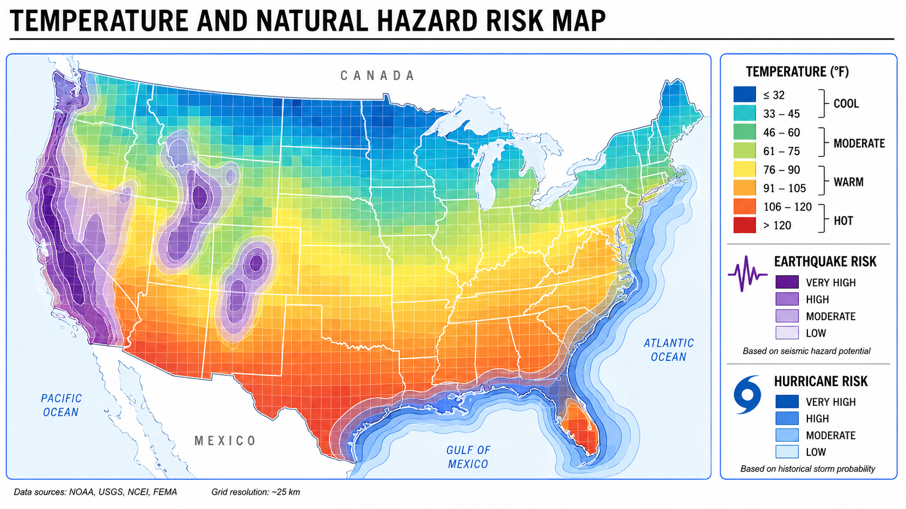

Global Weather and Natural Hazards Web Application

This web application is designed to help users evaluate potential travel or relocation destinations based on environmental conditions, exposure to natural hazards, and other location-specific variables. Users can search globally using month-by-month weather patterns, natural hazard risks such as earthquakes, hurricanes, and flooding, and additional filters relevant to destination comparison.
Deliverables
- Web Application: An interactive web application that allows users to filter and compare global locations based on weather, natural hazard risk, and other selected criteria.